Пространственно-временные аспекты денежного обращения на территории Беларуси в современных границах отражены в периодизации Рябцевича В.Н., включающей 9 этапов:
1)Монеты периода римского денария распространялись на территории бассейна Немана: серебряные римские денарии, серебряные драхмы,
2)Период куфического дирхама концентрируется вдоль течений Днепра и Западной Двины: куфический дирхем, дирхамы халифской династии Аббасидов.
3)Монеты периода хождения западно-европейского динария распространен на территории всей территории Беларуси:
1. Западноевропейский денарий - серебряная монета.
2. Византийская группа: Золотые – номисмы, сребрянные – милиарисии, медные – фолисы.
3. Первые русские монеты: златники и сребреники.
4)На территории Беларуси начинают использовать металлические слитки: гривны и рубли типов: Литовские – палочковидная форма, Новгородские – ладьевидная форма, Киевские – ромбовидная форма. Локализуются в Поднепровье и Подвинье
5) Пражские гроши локализовались в Беларуси в Подвинье и Поднепровье. С 15 века начинает складываться монетная система ВКЛ - пенязь или денарий.
В 14-15 веках: шиллинги ливонского ордена, дукаты – золотая монета, золотые ангельские нобли, краковские деньги, голландские дукаты мангыр – турецкая монета.
6) Создание польско-литовской монетной системы. Отчеканена первая литовская монета- грош; золотая монета – дукат и литовские талеры.
Распространена отдельная группа монет: А)Филиппки. Б) Угорские дукаты. В) Португалы – золотые монеты. Г) Торнер – монета Шотландии. Д) Шиллинги ливонского ордена. Е)Полугрошовики прусские – драйпелькеры.
7) Открытие монетных дворов. Литовские эмиссии: Солиды– билон и медь, орт, полудукаты и дукаты.
8) Денежное обращение в конце XVIII в. - 50-е годы XIX в., было представлено различными платёжными средствами: польско-литовские, нидерландские, прусские монеты так российские монеты и ассигнации.
9) Российские советские рубли использовались повсеместно.
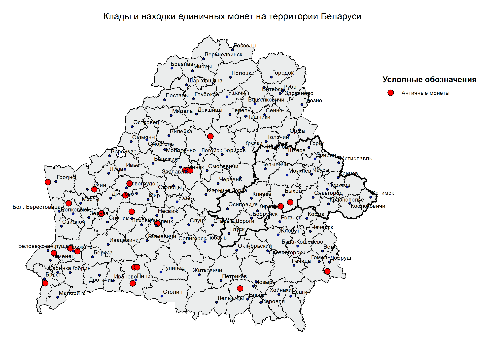
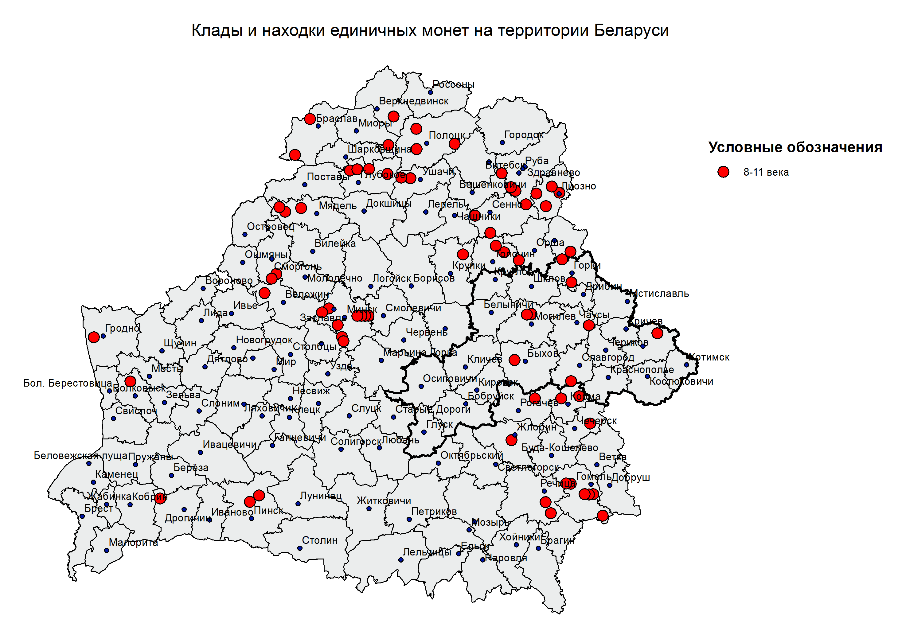
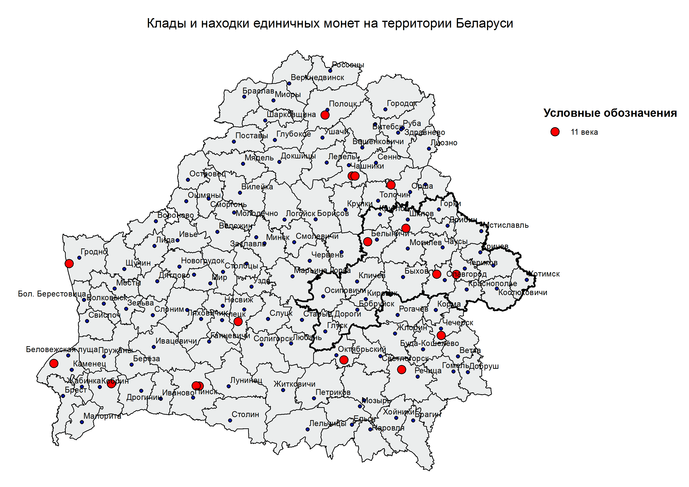
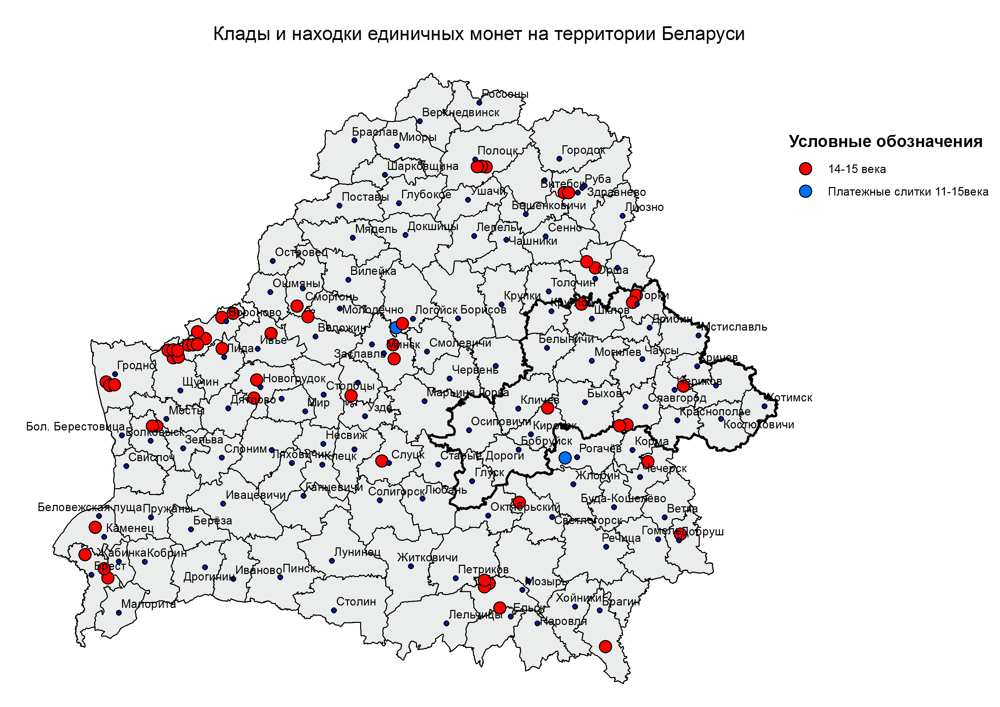
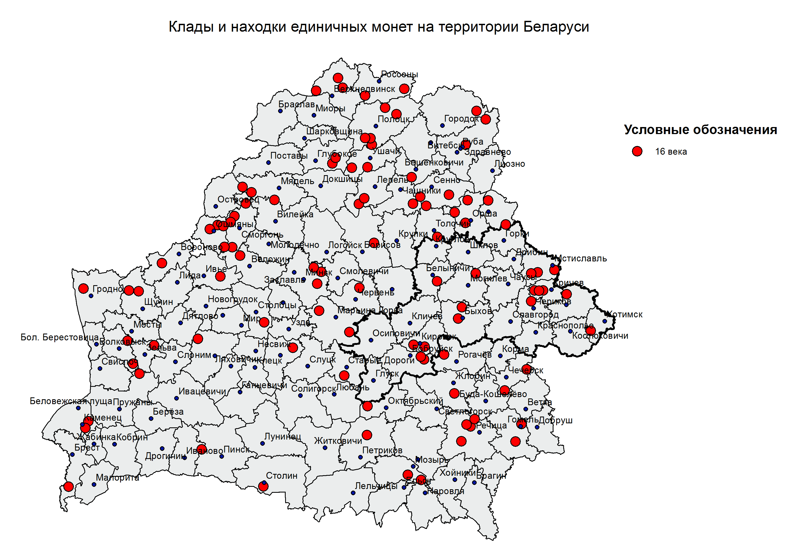
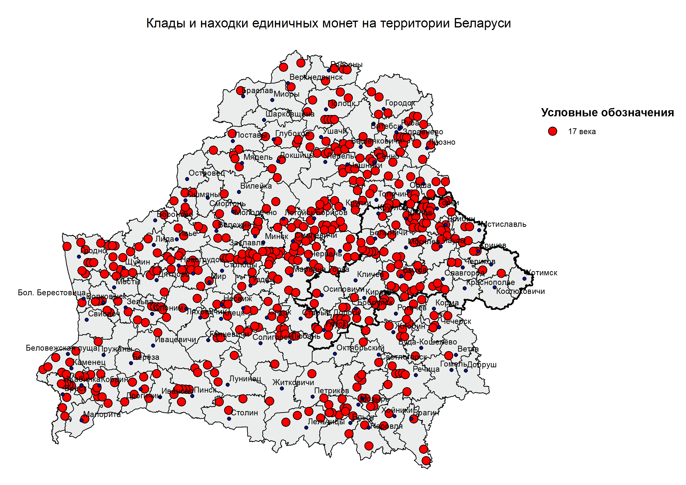
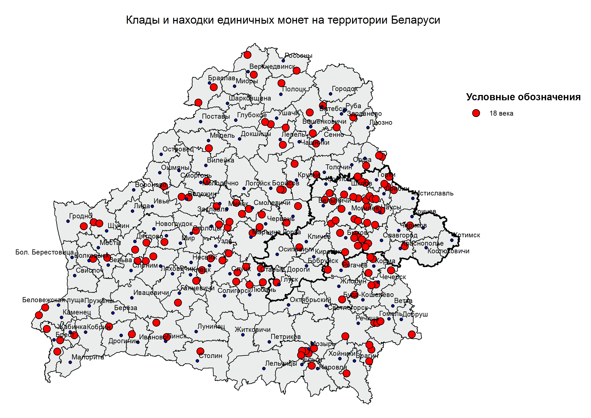
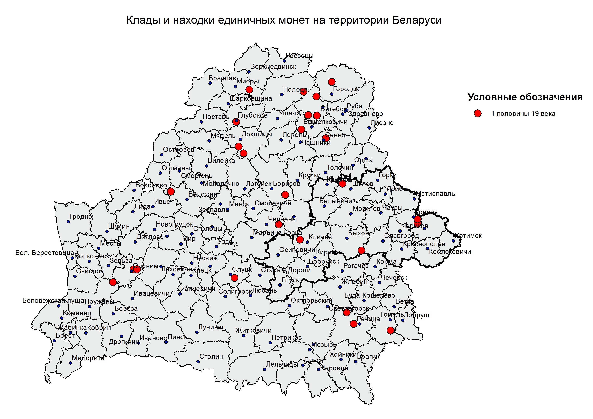
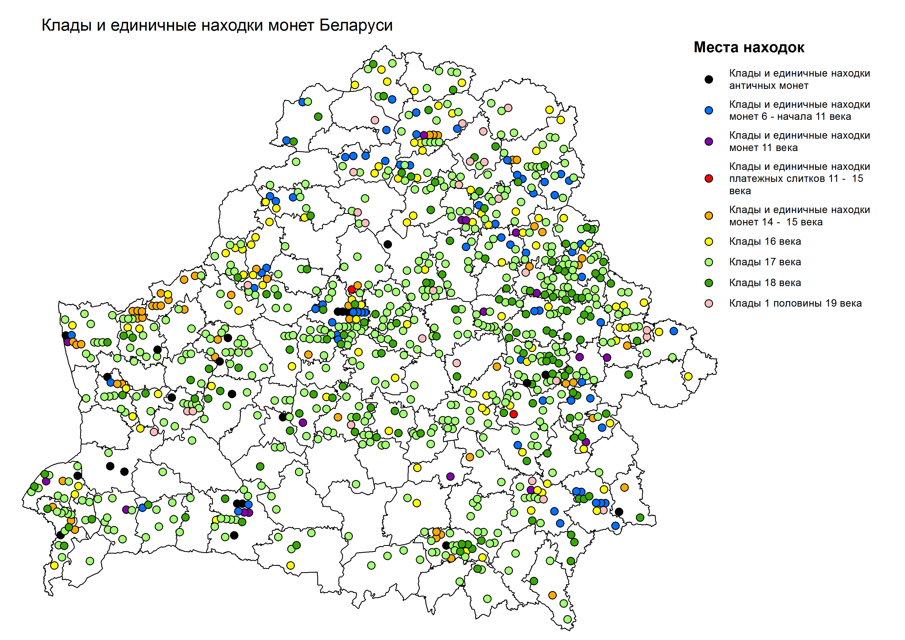
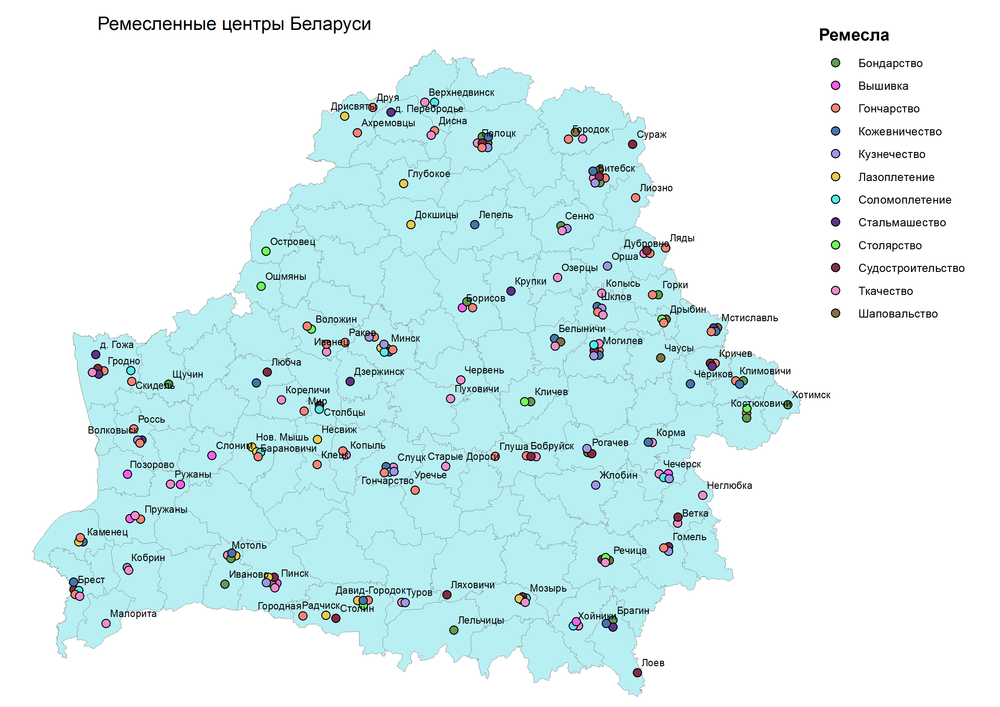
Ремесло — мелкое ручное производство, основанное на применении ручных орудий труда, личном мастерстве работника, позволяющем производить высококачественные, часто высокохудожественные изделия.
Ремесла имели большое значение в жизни населения с древних времен. Человек охотился на животных, и непосредственно использовал шкуры животных для одежды и строительства 1 типов «поселений» Зарождение ткачества позволило использовать местные травянистые растения для изготовления одежды. Гончарство появилось с необходимостью создания емкостей для хранения пищи и воды, а в последующем еще и строительные функции. Проживание человека в лесной зоне позволило использовать древесину в качестве строительного материала, мебели, посуды, первичных орудий труда, а в дальнейшем создании сложных механизмов таких как: колесо, станки для прядения, телег и лодок. Большое значение на все виды ремесел оказало открытие железа. Используя болотные руды, человек освоил 1 из основных ремесел – Кузнечество. Развитие этого ремесла позволило создавать более долговечные продукты и служило источником развития хозяйственной деятельности общества. Со временем ремесла трансформируются и приобретают характер промышленности, теряя свою уникальность.
Для Могилевской области характерны все виды ремесел, но особенно выделяется шаповальство, которое распространенно в северо-восточной части области.
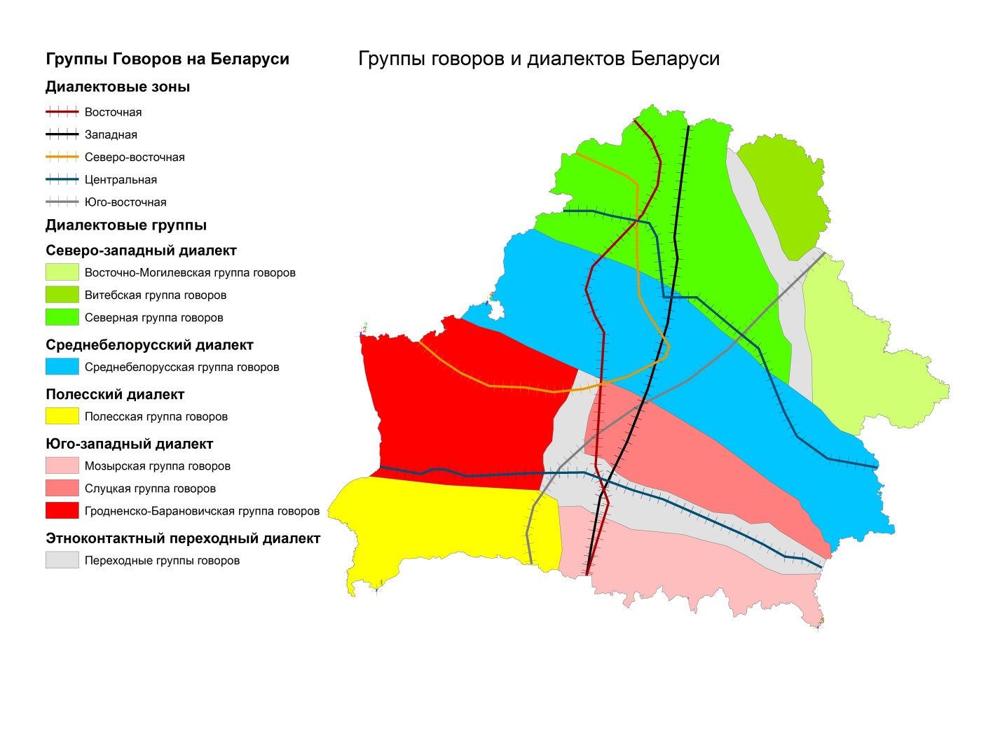
Обряды
Традиция - элементы социального и культурного наследия, передающиеся от поколения к поколению и сохраняющиеся в определенных обществах и социальных группах в течение длительного времени[23].
Функции традиций: а) устанавливает преемственность культуры, б) служит каналом хранения и передачи информации и ценностей от поколения к поколению, в) выступают механизмом социализации и инкультурации людей, г) выполняют селективную функцию отбора подобающих образцов поведения и ценностей.
Обряд - традиционные действия, сопровождающие важные моменты жизни и производственной деятельности человеческого коллектива.
Обряды:
Семейные (связанные с рождением, свадьбой, смертью)
Календарные (сельскохозяйственные и другие обряды)
Обряды и традиции тесно связаны с праздниками
«Каляды» Коляды (языческий с элементами христианства) В Христианстве - Рождество
Коляды для предков современных белорусов были главным зимним праздником, который был связан в первую очередь с днем зимнего солнцестояния и символизировал начало нового года – и солнечного, и сельскохозяйственного. Празднование начиналось 25 декабря и продолжалось до 6 января. С принятием христианства языческий праздник превратился в праздник рождения Иисуса Христа. Колядные святки стали праздноваться с 6 января и до 19 января – Крещения.
Колядный комплекс на всей территории Беларуси, включает три кутьи: перед рождеством, Новым годом и перед Крещением. На все три кутьи приглашали мороз и ставили кутью на подоконник. Назавтра кутью давали корове, чтобы была здоровой[23].
На Западе региона крестники сами ходили к крестным за подарками, а священники к прихожанам, в отличии от Восточных областей страны.
В колядных обрядах Могилевской области сохранились элементы языческой и церковной обрядовой символики (зерно, сено, скатерть, иконы, кресты, свечки, Вифлеемская звезда) которые, согласно представлений сельских жителей имеют магическую силу и используются в разных сочетаниях. Для всех районов Могилевской области характерны колядные игры, но проводятся и называться они по разному: гулять кашу(Хотимский район) «гулять аладки»(Шкловский район).
На Минщине в Копыльском районе "Колядные цари" в 2009 году вошел в Список нематериального культурного наследия ЮНЕСКО. История обряда "Колядные цари" уходит корнями в XVIII век, когда недалеко от деревни Семежево стояли части царской армии. Как говорит местное предание, в дни празднования Нового года солдаты и офицеры ходили по дворам, показывая веселое представление. После того, как отряд покинул деревню развили ее в уникальное рождественское действо.
В Логойском районе восстановлена древняя рождественская игра «Печь кота» - Кот, конечно же, не настоящий, а приготовленный из теста, лапы сальные, хвост – колбасный. Играющие должны по очереди подъезжать к нему на ухвате и стараться откусить кусок.
"Цягнуць Каляду на дуба" Обряд, который справляется в Березинском районе Его атрибуты, а особенно кукла Коляда, и манипуляции с ними имеют глубокое символическое значение, которое разъясняется в обрядовой песне. Оказывается, Коляду тянут на дуб, чтобы обеспечить хороший урожай, здоровье и счастье сельских жителей. Интересно, что в разных деревнях на дуб водружают разные предметы: колесо, борону, кутью в горшке на сене, охапку соломы в женской одежде.
В Гомельской области коляды имеют отличительные особености: в Кормянском и Гомельском районе на коляды водят козу и переодеваются в медведя. В Буда-Кошелёвском районе на коляды водили журавля, медведя, колядовщики переодевались в цыган. В Ельском районе на 2 кутью ходили колядовать с козой и носили сосновую звезду украшенную цветами.
На Витибщине колядовать ходили дважды: перед Рождеством и на Новый год. На рождество ходили со звездой, иногда переодевались в волка, медведя, козу, цыгана, цыганку. На Новый год водили волка и козу.
Жаницба Цярэшки – самая распространенная игра рождественская игра, в которой участвовали молодые парни и девушки. Главными лицами игры были «матка» и «бацька», которые должны были подобрать из парней и девушек пары и как бы поженить их. В некоторых районах парни сами себе выбирали девушек в пару, например в Поставском.
В Брестской области, в Давид-Городке уже сотню лет в ночь на 14 января собирает тысячи горожан уникальный местный обряд "Коники". Здесь исключительно свои традиции колядования. И главными атрибутами обряда являются не коза и звезда, как в других регионах, а рог и конь[17].
«Грамніцы» Громницы или Сретение (христианский, имеет связь с язычеством).
Этот зимний праздник имеет глубокие корни, еще наши предки-язычники считали его особенным. Сегодня в Беларуси его празднуют дважды: 2 февраля – по католическому календарю, а 15 февраля – по православному. Громницы всегда символизировали переход пор год от холодной и лютой зимы к жаркому лету. Все ждали тепла и солнца, хотели ускорить этот природный процесс. Несмотря на то, что февраль традиционно был самым холодным месяцем в году, наши предки говорили, что на Громницы зима с летом встречается. А значит, этот праздник уже можно считать весенним. Считалось, что именно в этот февральский холодный день может быть гроза с громом и молниями, которая дает надежду на скорый приход весны[23].
«Масленіца» Масленица (языческий)
Масленица в наибольшей степени распространен на Могилевщине и в восточной части Витебской области.
На Гомельщине Масленица отличалась от других регионов карнавальностью, исполнением обрядных песен. В Добружском районе катались на санях вокруг деревень. Во многих районах коней украшали разноцветными лентами. На Масленицу поздравляли молодые пары, которые недавно поженились, желая им иметь много детей. Вечером парням которые еще не женаты, перевязывали колодку, ступу или чайник[17].
В Витебской области на Масленицу катались с гор, причем не только молодежь, но и женатые мужчины и замужние женщины.
«Гуканне вясны» Зазывание весны (языческий) тесно связан с Благовещением
Этот белорусский обычай – один из самых жизнерадостных и оптимистичных. Заканчивается долгая зима, а на смену ей идет красавица-весна. Чтоб ускорить ее приход и устраивается народный праздник, который носит название «Гуканне вясны»[23]. Распространен на восточной части Беларуси.
Эта традиция имеет глубокие корни: звать весну начали еще в древние времена, когда наши предки были язычниками. Кличут весну обычно в конце марта - начале апреля. Чаще всего народный праздник совпадает с праздником церковным – Благовещеньем.
Во многих районах Беларуси в наши дни сохранены ритуальные действия праздника: сожжение на костре зимы (ненужных в хозяйстве предметов), пускание по реке колеса на плоту как отражение культа Солнца (Посожье и Поднепровье, качание на качелях, вождение хороводов; жертвоприношение земле – закапывание горшка каши, обход дворов, обычай «затанцовывания весны»
Отличительные особенности обряда «Гуканне вясны» являлось то, что выбирается высокое место, разжигается огонь, поются специальные песни. В Ельском районе весну встречали на Масленицу, разжигали костер, девушки и парни выходили на берег речки, звали весну, водили хоровод. В Кормянском районе весну звали и на 1 и на 9 марта, и на Благовещение. В Буда-Кошелевском районе локальной особенностью обряда является исполнение песни «Сегодня у нас Благовещение» а так же завивают березки ленточками и водят хоровод, разжигают костер и прыгают через него. Так же парни сжигают соломенное чучело около озера и бросают в воду, а оставшиеся угольки несли домой. В Лельчетском районе место для обряда выбирали около березки, на которую девушки закидывали венки. 1 марта водили хороводы, а затем пытались сбить свои венки. В Житковическом районе «звали весну» на масленичной неделе, выбирали веснянку и делали для нее большой венок[17].
«Юр’я» Юрьев день (христианский с элементами язычества)
На Могилевщине связан не только с выгоном скота, но и обеспечением здоровья и благополучия семье и домашнем хозяйстве. В этих обрядах просматривается магическая основа культов воды и огня как оберегово-очистительных сил, которые способствуют благополучию, а также здоровью людей и домашних животных.
На Гомельщине празднование сопровождалось развернутым обрядовым комплексом который включал в себя разнообразные песни, обряды, игры, приметы и поверья, связанные с животноводством и земледелием. В Кормянском районе обряд первого вывода скота сопровождался заговорными формулами. В Гомельском районе на пороге хлева клали крапиву с целью защиты от местных ведьм, 3 раза обходили корову с хлебом, солью и свечкой. В Житковическом районе пекли каравай, украшали ветки вишни или сливы лентами и цветами, Шли с караваем в поле, водили хоровод в поле вокруг парня с караваем и граблями, приглашали священника, который служил молебен в поле, проводили коллективную обрядовую трапезу[23].
«Вялікдзень» Пасха (христианский, с элементами язычества)
Празднование Пасхи на Могилевщине включало в себя посещение церкви, торжественную трапезу, волочебный обряд. Волочебники пели своим своим односельчанам песни, желали благополучия и счастья, призывая при этом Бога и святых. В Кличевском районе на 2 день пасхи водили Луку: девушки собирались посреди деревни, водили хоровод и пели песню «Лука», что имело целью продуцирования новых свадеб[23].
На Гомельщине распространен обряд «Погребенные стрелы» В разных районах он празднуется в разное время, имеет разную структуру и семантику ритуальных действий, но большей степени на Пасху. Обряд распространен Ветковском, Буда-Кошелёвском, Чечерском, Хойникском районах. Сначала водят хоровод по улице, для чего становятся в три шеренги, затем разжигается костер, что бы злые духи покинули селение. Участники выбирали пана из девушек и паненку из парней. Затем приходили на поле, пан и паненка брали стрелу и качали ее, как человека. Поле чего выкапывали ямку, на дно которой клали колоски, связанные в пучек. На этот пучок бережно укладывали стрелу-кукол, скрученную из разных лечебных трав с колосками и обернутую полотном и эту стрелу закапывали. Функцией обряда было изгнание злых духов из деревни, повышение урожайности злаковых и защита от молний.
Празднование Пасхи на Витебщине сопровождалось развернутым обрядовым комплексом. В ночь на Пасху не гасили огня, не закрывали сараев. С вечера шли в церковь на всенощную службу. В первый день после разговения распространены были обходы волочебников, состоящих из молодых парней исполняющие величально-заклинательные песни.
В Брестской области обряд “Намскі Вялікдзень” проводится в деревне Оброво Ивацевичского района в первый четверг пасхальной недели. Он появился около века назад. Тогда в селе стали болеть и умирать дети. Старожилы подсказали: женщинам нужно за ночь соткать рушник, а мужчинам – смастерить кивот для иконы Богоматери. Затем с иконой, обёрнутой в рушник, люди обошли всю деревню, зайдя в каждый дом[17].
«Сёмуха» Троица (христианский с элементами язычества)
Один из главных христианских праздников - День Святой Троицы - отмечается на 50-й день после Пасхи. В православии он относится к числу двунадесятых праздников и прославляет Пресвятую Троицу. А Пятидесятницей он называется потому, что сошествие Святого Духа на Апостолов совершилось в пятидесятый день по Воскресении Христовом[23].
Русальный обряд на Гомельщине относиться к числу ярких весенних обрядов. Согласно народным представлениям, русалки могут оказать влияние на урожайность полей, что ярко отражает обряд проводов русалок. В структуре местных обрядов Добрушского, Хойникского района можно выявить следующие обрядовые моменты: выбор красивой девушки на роль русалки, сбор цветов, трав, крапивы, плетение венков и русалочьего хвоста для «русалина», шествие с одного конца улицы женщин с русалкой, а с другого – мужчин и парней с «русалинам», обход всех улиц с песнями, шествие к ржаному полю, встреча ряженых на каждой улице с хлебом-солью, что бы был хороший урожай в следующем году, было много хлеба, что бы был хороший урожай. Затем начинают водит хоровод возле поля, забрасывают в рожь хвост «русалина» и венков[17].
«Купалле» Купалье или Иван Купала (языческий)
Празднуют в дни летнего солнцестояния, которые приходятся на даты с 20ого по 26 июня в зависимости от года, который посвящен одному из самых почитаемых языческих богов восточных славян – богу всех земных плодов Купале.
Купальские обряды – красочные и наделенные большим смыслом. Все обряды совершались в канун праздника. Это и сбор трав в поле, и плетение венков, и обливание водой, прыжки через костер, гадания, выслеживание ведьм и многое другое в зависимости от местности.
С утра девушки и женщины с песнями отправлялись в поле собирать купальские травы. Песни при этом являлись обязательным атрибутом. Считалось, что они передают лекарственным травам особую силу.
Важное значение уделяли и купальскому огню, который всегда был связан с оборонительными и магическими очищающими обрядами. На купальском кострище сжигали старые ненужные вещи. Это символизировало вечное обновление жизни. Как символ солнца поднимали на счастье зажженное колесо. Ну и, конечно, важным моментом были прыжки парней и девушек через костер, обладающий чудодейственным свойством очищения.
А чтобы сбылись абсолютно все желания, нужно было не много ни мало, найти вожделенную папараць-кветку.
Вместе с сохранением общенациональных фрагментов в празднике наблюдается тенденция сохранения и развития региональных традиций: в Восточной Беларуси (Витебская область) девчата наряжаются в «куст» и в этом уборе обходят дома селения, исполняя величальные песни, приглашая всех на праздник, поздравляя людей, которые родились в этот день; в районах Минщины впечатляет карнавализированное шествие с зажженными факелами; в Ивановском районе Брестской области сохранены черты театрализованной купальской обрядности – эпизод с ряженой ведьмой, которая пробует украсть купальский огонь; в Ганцевичском и Малоритском районах – обряд сожжения или потопления купальской куклы Мары; в Гродненской области – обычай обливания водой как магический ритуал сохранения дождя на следующий год. Купалье стало одним из самых любимых обрядовых праздников белорусов, который отличается массовостью, развивает коллективное народное творчество. Купалье проводится в Александрии (Шкловский район) Могилевской области – отражает интерес данного региона.
«Зажынкі» Зажинки (языческий)
Зажинки один из древнейших земледельческих праздников. На Зажинки отправлялись или утром до восхода солнца, или в сумерках. Самую первую сжатую жменю колосьев жнея клала не в сноп, а отдельно на поле вместе с хлебом и сыром.
Потом начинали жать первый сноп — «гаспадарок». Он считался именинным. Обычно его зажинала старшая в семье женщина. Его украшали цветами, несли в дом с песнями и ставили в красный угол под иконы. С него же начинают осенью молотьбу, а соломой кормили больную скотину. Зерна первого снопа считались целебными для людей и птиц.
«Дажынкі» (Дожинки) Успение Богородицы (языческий переплетен с христианским)
Культура белорусов тесно связана с землей, земледелием. Многие праздники, обычаи и традиции берут свое начало из событий, тесно связанных с земледельческим календарем. Дожинки, пожалуй, самый известный из таких праздников.
С давних времен «Дожинки» означали конец жатвы, горячей уборочной поры и тяжелой работы, поэтому и праздновали его всегда с размахом. В последней день жатвы на поле собиралась толока – добровольные помощники, среди которых были родственники, друзья, соседи. Самая старшая и уважаемая женщина показывала, где кому жать и первой начинала жатву. Каждый взмах серпом сопровождался специальными обрядовыми песнями.
Когда дело близилось к завершению, проводился обряд «завивания бороды». Этот древний обычай связан с поклонением духу поля, который скрывается в последнем несжатом снопе. На Полесье, например, этот обряд проходил так: внутри несжатого куска поля оставляли хлеб и соль, над которыми связывали колосья – «завивали бороду». Потом эту «бороду» срезали серпом и добавляли в последний сноп, а на голову старшей жнеи надевался венок из колосьев этого снопа.
После завивания «бороды» жнеи начинали кататься по земле, по полю. При этом они просили сжатую ниву вернуть их силу. После этого последний сноп красиво наряжали и несли в дом хозяина поля. Среди всех жней выбиралась самая красивая девушка, которая возглавляла шествие с дожиночным снопом. Хозяева встречали жней хлебом-солью, а дожиночный сноп занимал свое почетное место под образами. В некоторых регионах во дворе или на поле купали хозяина – проводили обряд очищения водой.